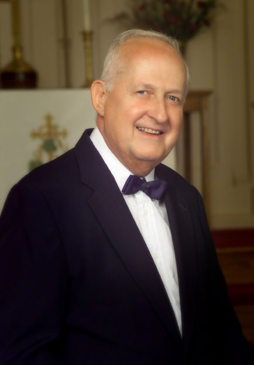

Interim Artistic Director
Raymond J. Rotuna, Interim Artistic Director
The Board of Directors is pleased to announce the appointment of Ray Rotuna as Interim Artistic
Director.
Ray is no stranger to our choral society, serving as Vice President, printed program and scholarship
founding member, and a veteran of over 15 years in our tenor section. Judy, Ray's wife, has also been a
member in our alto section for the same number of years.
Ray began his musical keyboard and vocal training at age seven and became organist and solo cantor
for his school's and churches' religious services beginning at age eight. His formative musical education
continued through high school, studying voice with Grace Mansel and classic pipe organ with John Sayre.
Ray's mentors included Phil Inman. Ray was first chair tenor in Phil's high school concert choir and,
by audition, was awarded the same chair at regional choral festivals. During various times in his teen
years, he was organist and choir director for five churches in Beaver County and served as organist at Brunnderdale Seminary in Canton Ohio. Ray also developed an active private teaching studio, training
over fifty students of various ages weekly in lessons on piano, organ, voice, and theory.
After high school, Ray was granted a full academic and music scholarship to Duquesne University where
he completed studies for a Bachelor of Science degree in music education with a major in voice, minor in
piano, focus on choral directing. Following student teaching at Dormont Elementary School, Dormont,
PA, and teaching and directing the Baldwin Senior High School, Pittsburgh, PA concert choir and girls’
choir programs, he continued to pursue further career development.
Ray was approached by CBS, Inc. in 1981 and accepted a marketing position with Steinway & Sons, New
York. From that time until his retirement as Senior District Manager from Steinway in January of this
year, Ray's strong analytical and managerial skills led to professional recognitions. His extensive global
travels to historic and cultural centers, in association with Steinway and numerous universities, colleges
and music schools, helped him develop unique perspectives on business management, concert hall
acoustics, music education and performance. He was a founding member of William Steinway University,
New York, where he served as curriculum author and faculty member.
Back at home in western PA, Ray founded a cantata choir serving as artistic director, a classic organ
concert series, and has been organist, pianist, and vocal soloist for numerous weddings, funerals, and
special events including organist for the Miss Teen PA Pageant. He is an active member of The American
Choral Director's Association.
Former Director

Philip H. Inman, Director Emeritus
On May 9th, 2011, The Board of Directors received a letter from our beloved friend and teacher Phil
Inman, announcing his retirement as Artistic Director from the Beaver Valley Choral Society. Serving
as our leader for nearly 32 years, Phil noted in his letter that he made the decision to retire after much
thought and discussion with his wife Mary. He commented that he would never forget the many years of
rehearsing and the many concerts he directed. Phil further expressed his heartfelt thoughts about the choir
members by thanking them for the many beautiful concerts that were performed throughout his years
as director. He also recognized the exceptional talent of our accompanists and the dedication of all the
people who narrated the many concerts over the years. Phil ended his letter with a simple but powerful
request, “Please keep the Choral Society singing.”
The love and dedication Phil freely gave to the Choral Society was returned with respect and admiration
from the members. The BVCS is committed to building upon the foundation Phil created and is forever
grateful to the contribution he made. He will always be a part of the Beaver Valley Choral Society. In
gratitude, the Board of directors has bestowed upon Phil the honorary title of Artistic Director Emeritus.
As a faith based organization, we are thankful to God for the dedication of Phil and Mary over the years
and look to the future with faith in God in which all things are possible.
Our History
The Choral Society can trace its roots to an organization of the same name existing in 1930. It was directed by Professor Frank Hardman from Geneva College and was composed of selected volunteers from Ambridge to Ellwood City and eastward to Zelienople. Our present Society consists of 85 to 100 members and can boast the same boundaries. In the late 1960's and 1970's the Choral Society performed Handel's Messiah at Christmas under the direction of Mr. Mundo. In 1979, Mr Phil Inman began his tenure as director and a varied repertoire was built. Currently concerts are at Christmas and Spring and are performed in churches and auditoriums in the Beaver Valley, Pittsburgh and Youngstown areas.
Board Members
Members elected to the Board of Directors are as follows:
Philip H. Inman
Leeland K. Pfeifer
Raymond J. Rotuna
Patricia M. Latagliata
William F. Murphy
Samuel R. Contino
James M. Mannion
Don Inman